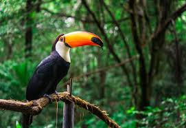
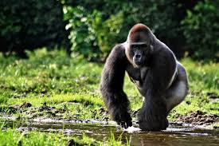

Natureza blog
Bem-vindo ao nosso blog sobre natureza! Aqui você encontrará artigos, fotos e vídeos sobre a beleza do mundo natural.
Artigos recentes
as florestas, vastos ecossistemas que abrigam uma diversidade incrivel de vida, desempemham um papel vital na saude do planeta. entre esses tesouros verdes, algumas se destacam como verdadeiras maravilhas na natureza, ocupando vastas extensoes e oferecendo um lar unico para uma infinidade de especies. mais informacoes click aqui!

1. Floresta Amazonica: o Pulmão do mundo
A floresta Amazônica é, inquestionavelmente, a rainha das florestas. Estendendo-se por aproximadamente 6,7 milhões de quilômetros quadrados, ela atravessa nove países sul-americanos, incluindo o Brasil, Peru, Colômbia e Venezuela. Além de sua biodiversidade extraordinária, a Amazônia desempenha um papel crucial na regulação climática global, absorvendo grandes quantidades de dióxido de carbono e produzindo oxigênio vital para a vida na Terra. Mais informações clique aqui!
2. Taiga Siberiana: A Floresta Boreal Implacavel
A taiga siberiana, também conhecida como floresta boreal, é uma das maiores formações florestais do mundo, estendendo-se por vastas áreas do norte da Rússia e da Sibéria. Caracterizada por seus longos invernos rigorosos e verões curtos, a taiga é composta principalmente por coníferas como pinheiros, abetos e larícios. Apesar das condições extremas, essa floresta abriga uma fauna adaptada ao frio, incluindo ursos, lobos e alces. A taiga desempenha um papel fundamental no equilíbrio climático global, armazenando grandes quantidades de carbono em seu solo e vegetação. Mais informações clique aqui!

3. Floresta do Congo: Tesouro Verde Africano
A floresta do Congo é a segunda maior floresta tropical do mundo, localizada na Bacia do Congo, na África Central. Ela se estende por vários países, incluindo República Democrática do Congo, Camarões e Gabão. Rica em biodiversidade, abriga milhares de espécies de plantas e animais, muitos deles endêmicos, como gorilas, elefantes-da-floresta e okapis. Além de sua importância ecológica, a floresta do Congo é fundamental para o clima global, atuando como um grande reservatório de carbono e regulando o ciclo da água na região. Mais informações clique aqui!
